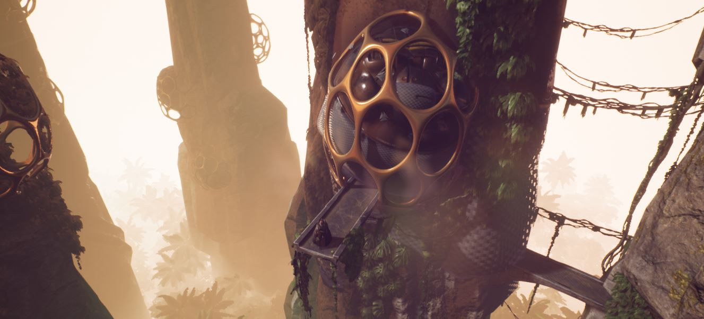

TEAM OF 2
Coding with "Vide Dialogues" - free asset on Unity Asset Store.
GAMES - Available On ITCH.IO
TEAM OF 2
Designing complex level and flow. Balancing elements.
TEAM OF 3
Building a complete environment with assets from the Unity Store.
WORLDBUILDING

Alien level in Unreal Engine 4. Experimented heavily with lighting and fog for this scene. Creating a vertically flowing environment with naturistic theme and organic forms.
Procedural Generation
Creating realistic planet-like worlds/maps using procedural generation in Unity3D. Biomes are based on the Whittaker biomes classification. Practicing optimizing the scene with tools for instancing, mesh-combining and lightbaking.
Representation of two similar worlds, different colors representing biomes, but in two ways / more spherical or maplike. The size can be any number of tiles.
Blending terrains of up to 10 different biomes.
Same biome but different seasons.
MY OTHER WORK
Some of these are personal projects that helped me learn new technologies and workflows, some is work I did for other developers. I try my best to document things I have learned as well as useful links and assets used in the process.
Sculpting the face using Blender. Texturing with Substance Painter. Adding apropriate clothing using Sketchfab assets.
Learning SpeedTree with SpeedTree Learning Licence, to get familiar with the process.
Modeling a kitchen in 3dsMax. Arnold Render.
UX/UI design on Rise of Piracy / Developing the look and feel of the campaign map.
Staging with Twinmotion.
Environment design for a prototype.
ABOUT ME
Hello, my name is Mel and I am self-taught in 3D and gamedev. I started my journey with 3dsMax but soon it spiraled out of control and I dipped my toe in all things gamedev. What I enjoy the most, is the creation of complex levels and interesting environments. I enjoy complementing game mechanics through the design of my levels and vice-versa, giving my players the best gameplay experience. I have finished a few small projects in the past year in teams of two mostly and published them on itch.io. You can read more about the recent project here. I love to play Single Player and Co-op games that have exploration elements, detective elements and a satisfying narrative. Nothing pleases me more than a good mystery be it in a form of a big map, puzzle, narrative or a system that is hard to beat. Games like Hitman, Vampyr and Sherlock Holmes would be the games I enjoyed the most in recent years. That is why in the future I will focus more on implementing such elements into the games I make. Feel free to contact me on nikol.melita@gmail.com